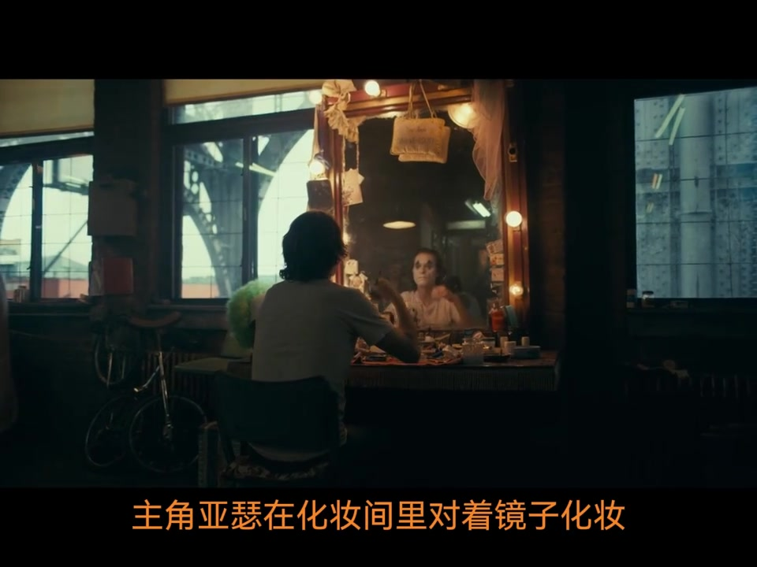
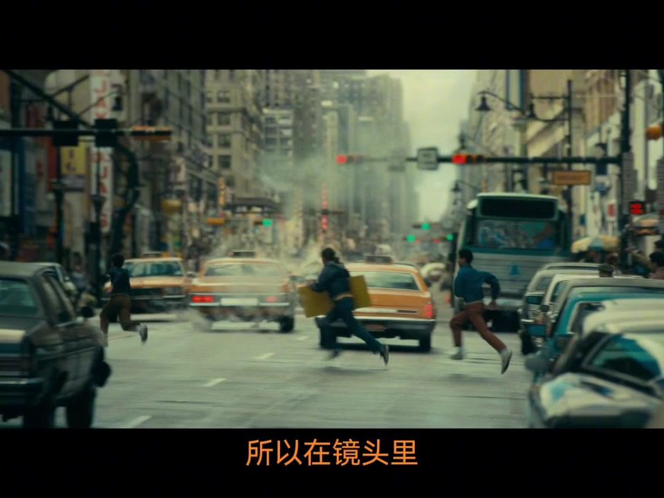
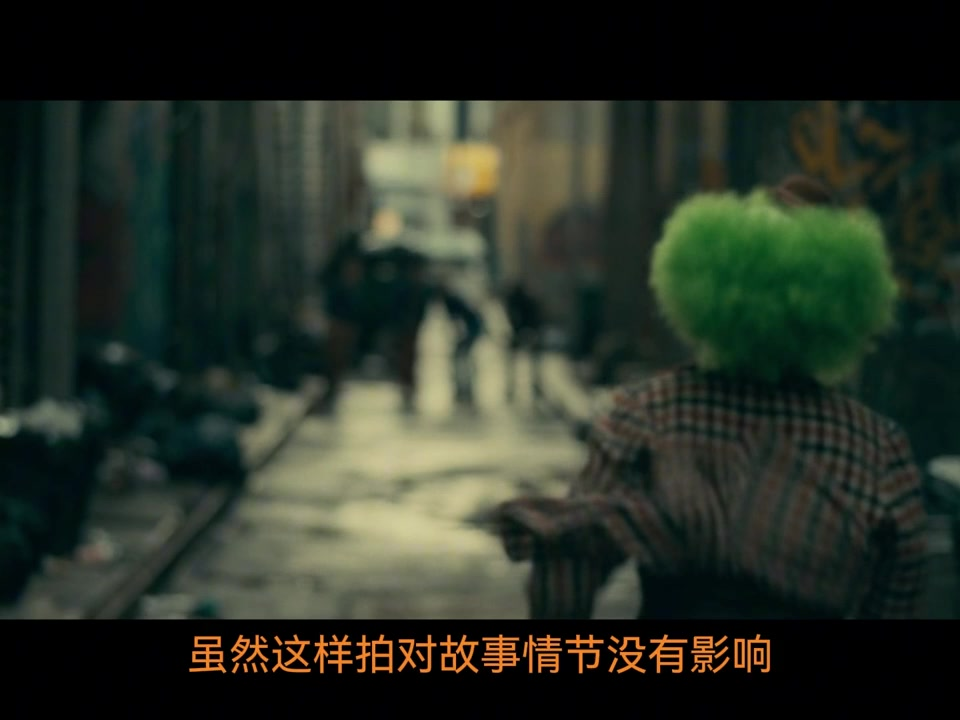
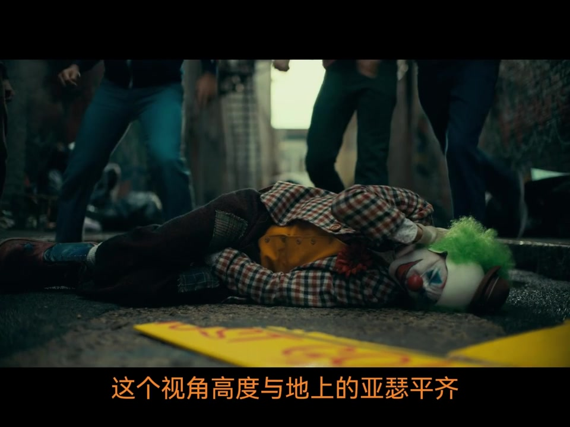
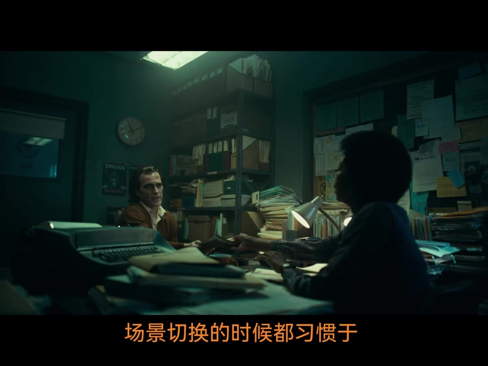
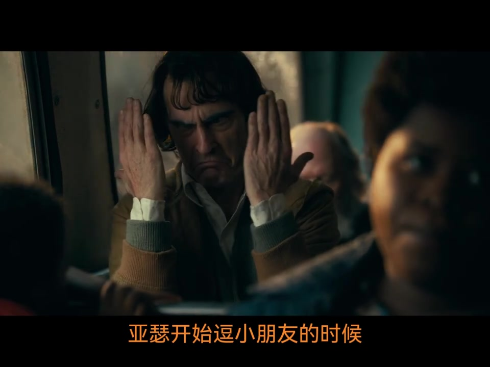
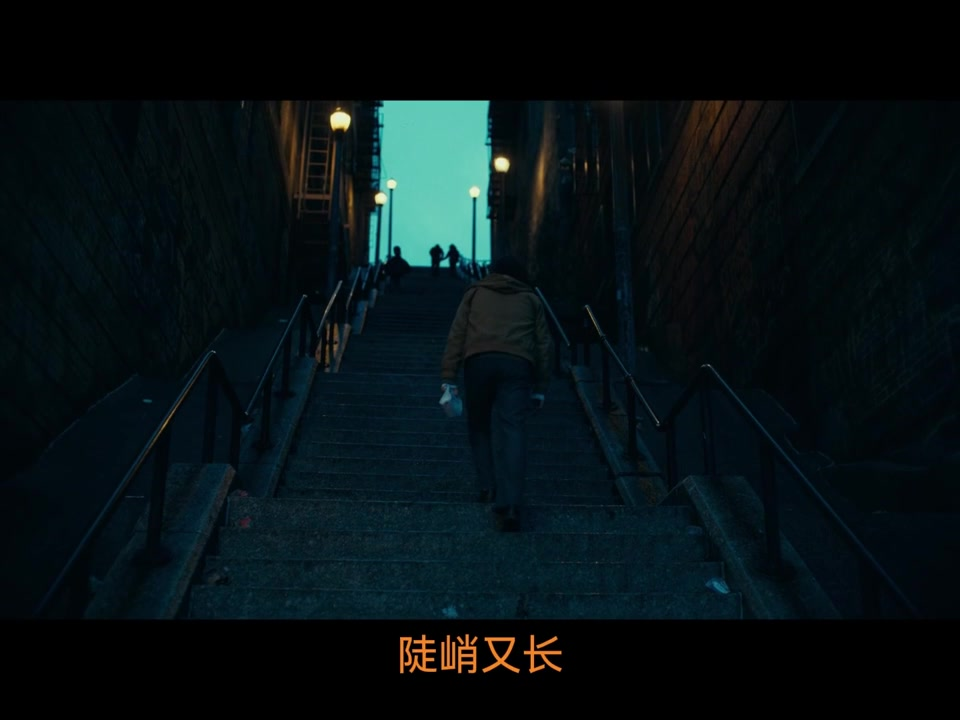
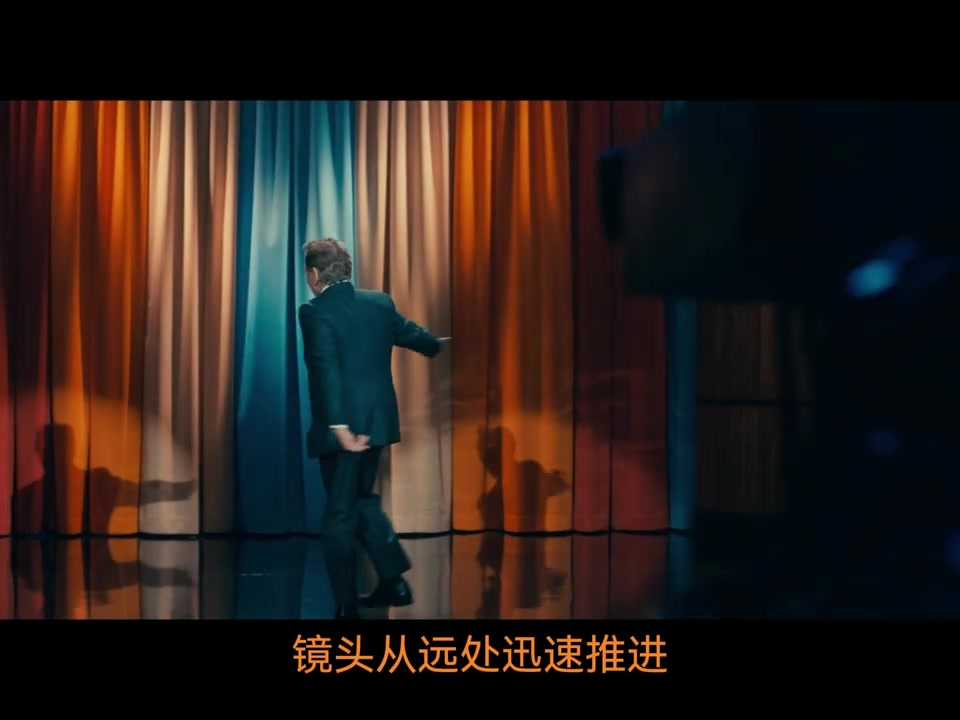

先问烂片，再声明这是个人看法
讲述者开场连问：导演为什么是电影质量的第一责任人？除了在片场喊 Action 与卡，内容层面究竟要做什么？烂片具体出了哪些问题？答案被放进对《小丑》视听语言的拆解里。
他补充背景：影片 2019 年获威尼斯金狮奖，是当时第一部获金狮的漫改电影；这篇笔记写于当年。接着是立场声明——以下只代表个人看法，讲得不好也不希望影响观众心情。随后直接进入第一场。
说明：下文叙述按可见字幕与剧情校正人名（亚瑟、默里）与术语；文末转录区保留 Whisper 原始分段，可能含音近误识。
化妆间里，主角不急着露脸
第一场：亚瑟在化妆间对着镜子化妆，这是主角首次出现。讲述者追问——观众怎么在开场就认出主角？不是戏份多少，也不是演员是否大咖，而是导演如何让出场“留在潜意识里”。

镜头顺序被逐格复盘：远景背影看不到脸 → 化妆手部特写仍不知模样 → 侧面大特写仍不见全貌 → 镜子近景由虚到实 → 接近正面的脸部大特写终于看清。这种“吊胃口再清晰亮相”被称作关键人物出场的基本描述手法：不见其人，先闻其声或先见其行。
追招牌：同一条街，两种光学脾气
下一场：亚瑟街头扮小丑，招牌被混混抢走，他被迫追赶。双方情绪不同——混混愉快挑逗，亚瑟慌乱紧张。问题变成：情节之外，如何用电影手法写出势力差距？

混混过马路用广角全景：视野广，远处运动幅度显得平缓。回拍亚瑟却用长焦远拍加手持：视野窄、空间被压缩，轻微晃动也被放大，观众潜意识里跟着紧张。讲述者批评许多“所谓导演”连这种入门光学对比都不会，平庸拍法会是两个一模一样的广角对切。
追逐中段用快速摇镜头（甩镜头）制造混乱感；到小巷口又做 180 度正背对切——通常容易让视点跳跃，但剪辑点选在亚瑟摔倒、视线落在右下角时，对切后视点仍在右下角，跳跃被“衔接”过去。
小巷：偷袭要突然，殴打要站边
亚瑟跑进小巷，被躲在一边的人用广告牌砸脸。如果一直从背面跟拍到偷袭发生，观众注意力会在远处混混与亚瑟背影之间游移，突然感会被削弱。导演改成切到正面，留足时间让观众跟亚瑟的疲惫，再让广告牌迎面砸来。

群殴段落被拆成两种立场：施暴者视角制造发泄痛快；受害者视角制造压抑。本片要写亚瑟被生活压垮，于是低机位与地上的他平齐。讲述者特意说明——低机位比正常机位更费事，绝不是摄影师累了把机器往地上一放。

随后大摇臂高机位俯拍：人物都显得渺小，水平线还略歪，可理解为扭曲感，也可能只是构图方便——他承认要问导演。混混离开后，稳定后拉从特写扩到远景，喧嚣远去，紧张松成疲劳；全片八九成镜头手持或缓晃，固定稳定镜头反而稀缺。
诊疗室：先砸一个大笑，再谈隐喻与关系位
切到心理治疗时，没有先用全景交代环境，而是直接切入亚瑟大笑特写，再慢慢铺开房间与医生。作用有二：把“病症式的笑”砸进观众记忆；并与上一场倒地痛苦形成诡异反差——观众会怀疑“这人是不是有病”，而角色确实有病。

明暗与位置对比（医生靠窗有光、亚瑟在暗处、高机位居中质问）被举例后，讲述者立刻刹车：好的隐喻应成体系、多处呼应；找不到呼应的解读多半是强行解读。他自己也承认，这场光影对比“非常有可能属于强行解读”。
对话戏被拆成机位清单：全景、二人关系位、单人小全景、单人带关系、单人特写不带关系。新手常“谁说话给谁镜头”；本片起初虽也跟说话者，但都带关系——两人试图交流。分歧出现时切小全景制造疏离；亚瑟自言自语时改单人特写；请求加药被拒时，医生侧也切成疏离全景再加不带关系近景。微妙剪辑看似不改剧情，却在潜意识里推观众情绪。
公交车上：妈妈慢慢入画，笑声无人接
亚瑟在公交上逗前座小朋友，被母亲喝止。为免母亲出场突兀，镜头一步步把她放进画面：先只露额头 → 逗笑时全脸渐入 → 孩子笑时完全入画再回头制止。注意力被牢牢按在亚瑟与孩子的互动上。

孩子笑的瞬间才切车厢全景：笑声在压抑车厢里显得清脆，周围乘客却无动于衷。亚瑟失控大笑、递卡片说明病情后，再切一个更广、机位微移的全景——扶手人影挡在前景，亚瑟被推远。讲述者强调：两个看似差不多的全景若说不出用意，主创很快会心里质疑；新人非常规构图必须让摄影明白剪辑逻辑。
回家阶梯与信箱牢笼：选景是在找思想
亚瑟爬很长很陡的阶梯回家，镜头随他摇高，露出被大楼挤压的一线天空。向上攀爬而非下行，形态佝偻；若阶梯只出现一次，解读可被斥为强行——但后文化妆间外、医院等多处阶梯会反复出现，意象才站得住。

选景被纠正：不只是找漂亮或好架器材的地方，而是找能承载氛围与思想的场景。剧本里可能只是“回家”一行字，随便走街就糊弄过去；找到这样的阶梯，过场立刻有思想。公寓信箱外罩铁笼，隔栏拍摄易联想到牢笼；车窗拍摄落寞亚瑟也多次出现。他同时承认：也可能只是隔栏好拍——但若导演要纯净画面，拆栏再装回也并非做不到。
默里、幻想推进，以及笑声戛然而止的长镜头
进门先听见妈妈问有没有查邮箱——不见其人先闻其声，标志关键人物登场。母子同床看默里脱口秀时，导演不单独给电视，而是把机位挪到床上，硬把电视与亚瑟身体带上关系，为后文崇拜与幻想上节目埋伏笔。默里出场也经铺垫后才从电视现身。
进入幻想用缓推加缓晃，注意力收束到眼神；默里舞台登场则用急速推进，从全景收到近景。环绕镜头模拟现场听脱口秀时“注意力绕着人物打量”。

收尾长镜头：正面跟亚瑟大笑出门，笑声忽然夹停、脸色阴沉，拐角改跟背后，沿几乎无光的走廊走进老板办公室。用长镜头而非分切，是为保住表演的戏剧转折，也让“从亮到暗、从面对到背对”的过程不断裂。讲述者说时间关系，其余放到下一集。